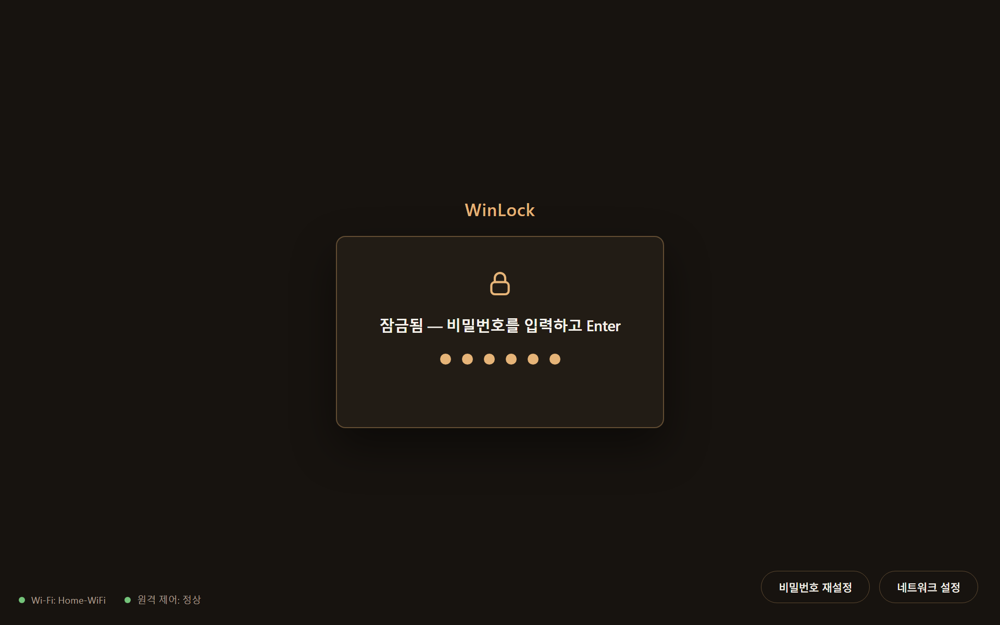
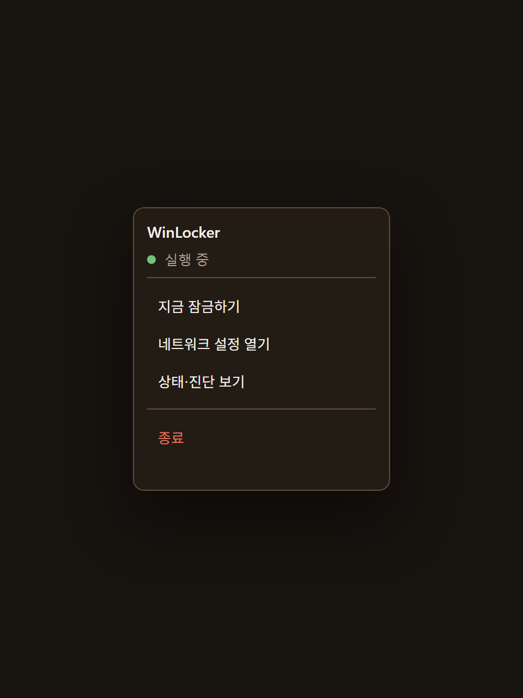
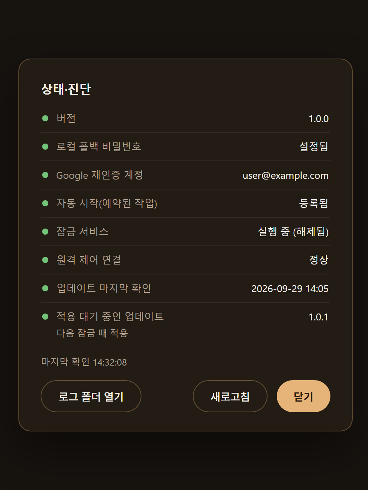
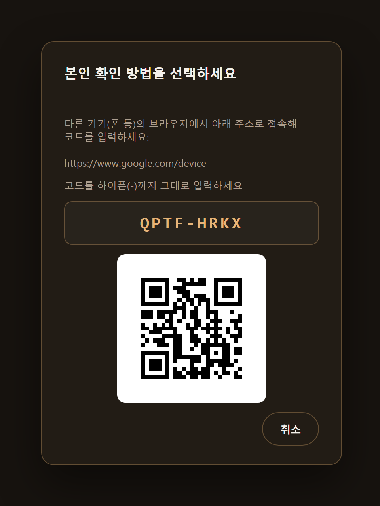
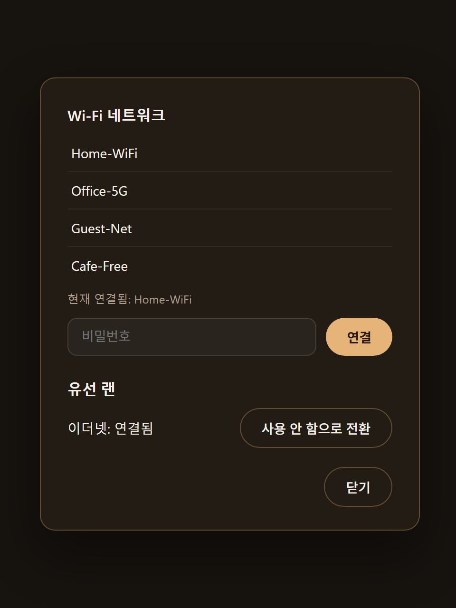

모든 모니터를 덮습니다
연결된 모니터를 모두 잠금 화면으로 덮습니다. 잠긴 동안 모니터를 꽂거나 빼도 1초 안팎에 다시 덮습니다.
WinLocker는 자체 잠금 화면으로 모든 모니터를 덮고, 재부팅해도 곧바로 다시 잠그는 Windows 잠금 프로그램입니다.
WinLocker-win-x64.zip, Windows 10/11 x64용 · 개인 사용 무료
폰 앱의 요청은 PC에서 도는 Remote Host가 먼저 인증합니다. WinLocker는 인증된 요청만 같은 PC 안의 로컬 통로로 받습니다.
재부팅해도 자동 로그온 뒤 스스로 떠서 곧바로 잠급니다.
연결된 모니터를 모두 잠금 화면으로 덮습니다. 잠긴 동안 모니터를 꽂거나 빼도 1초 안팎에 다시 덮습니다.
Win, Alt+Tab, Ctrl+Alt+Tab, Alt+Esc, Ctrl+Esc, Alt+F4를 막고, 비밀번호 입력은 그대로 받습니다.
잠긴 동안에는 작업 관리자를 열 수 없고, USB 저장장치도 막힙니다.
잠긴 동안 30초마다 보호를 다시 적용합니다. 일부가 실패하면 잠금 화면 하단에 알리고, 다시 성공하면 지웁니다.
원격이 안 될 때도 풀 수 있습니다.
트레이 아이콘으로 바로 다시 잠그고, 새 버전은 뒤에서 받아 둡니다.
해제 상태에서 트레이 아이콘을 우클릭하면 카드가 올라옵니다. 지금 잠그기, 네트워크 설정, 상태·진단, 종료를 여기서 씁니다.
잠금을 풀 때 새 릴리스를 확인해(최소 6시간 간격) 뒤에서 받아 둡니다. 다음에 잠글 때 교체하며, 교체하는 약 1초 동안은 화면이 잠기지 않습니다.
화면은 예시 데이터로 그린 것입니다.





디스크 암호화(BitLocker)와 자동 로그온을 먼저 설정해야 안전하게 쓸 수 있습니다.
WinLocker-win-x64.zip과 WinLocker-win-x64.zip.sha256을 받습니다..sha256 파일 내용과 같아야 합니다.
(Get-FileHash .\WinLocker-win-x64.zip -Algorithm SHA256).HashC:\Program Files\WinLocker)를 권장합니다.WinLocker.exe --install-autostart를 실행해 로그온 때 자동으로 뜨게 합니다. 예전 버전에서 등록했다면 한 번 더 실행해야 새 작업 설정이 반영됩니다.